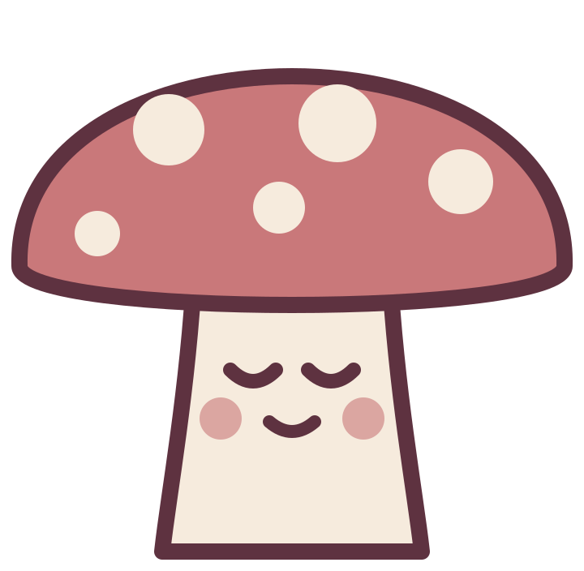

tulipananas
Et nytt «hvem er du»-tema hver dag. Svar på sju spørsmål, finn ut hva du er i dag – en fugl, en sopp, en kake – og se tilbake på alle dagene dine.
Hjelp og kontakt
Har du spørsmål, funnet en feil eller en idé til et nytt tema? Send en e-post til [DIN E-POST].
Font: Fraunces (SIL Open Font License).